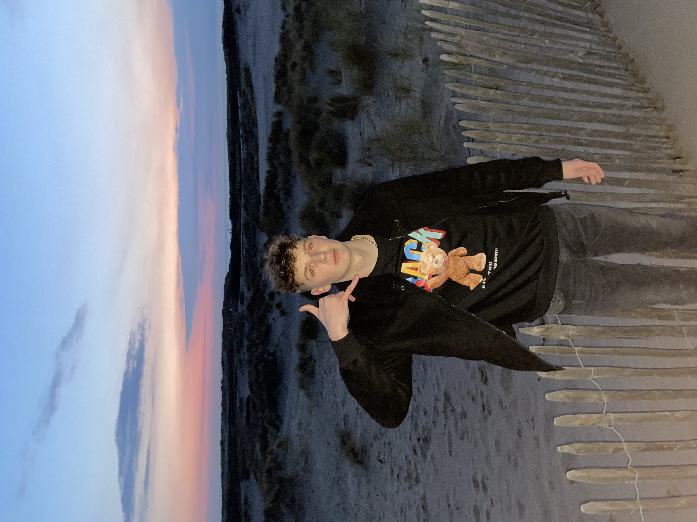
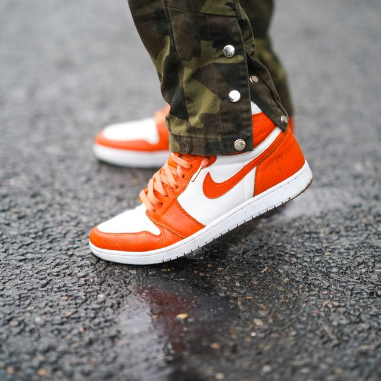
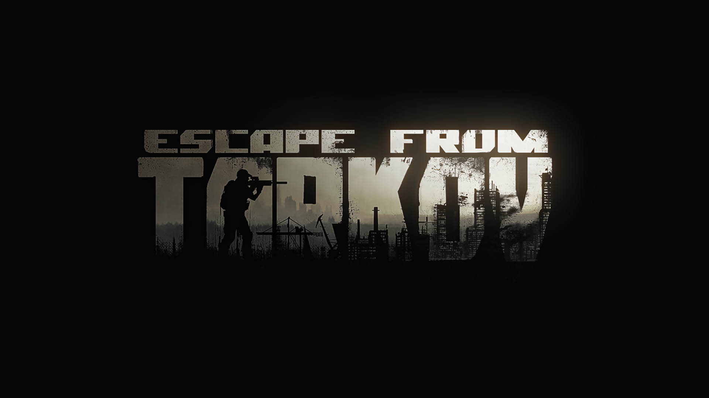
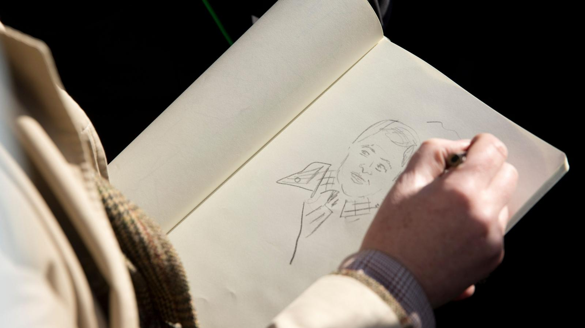
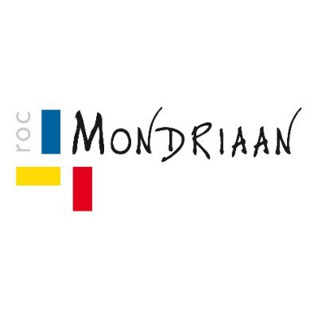
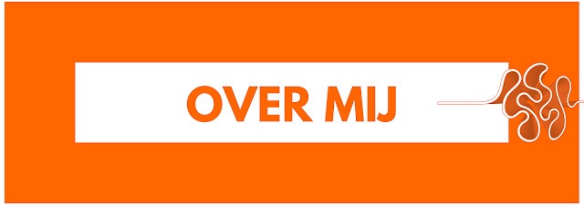
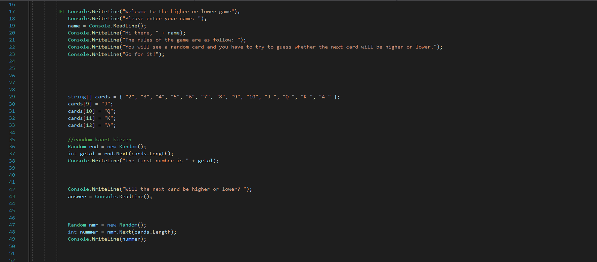
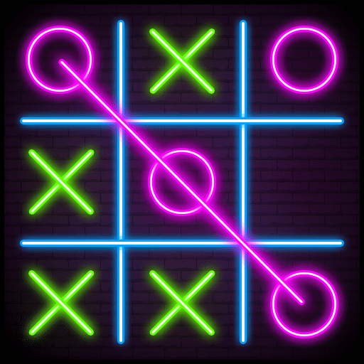
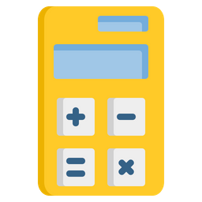
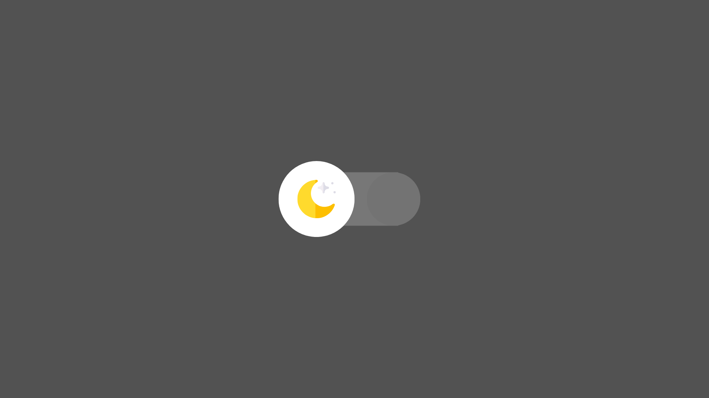

Portfolio
Maxymilian Horczak-Janse1tja
ICT software developer 
Over mij
Ik ben geboren in Polen in een stad sokolka. En woon nu in Den Haag met me moeder en vader mijn moeder is pools en mijn vader is nederlands.
2 september 2003 ben ik geboren. Ben nu 17 jaar oud.
Ik zat op basisschool de Klimop en middelbare school bij Maris College Waldeck.
Ik sport 3 keer in de week.
In mn vrije tijd zit ik te tekenen of gamen.
Wat ik teken is meestal comic art style omdat ik vind de style heel erg mooi.
Ik game op mn PC en daar speel ik Escape From Tarkov en Csgo.
Mijn reden waarom ik deze opleiding gekozen heb is dat ik zie veel geld in het werk ICT
maar ik vindt het lastig de opleiding door de corona maatregelen. 
 
 
Projecten
Project hoger of lager 
Project boter kaas en eieren hier  Project Calculator rekenmachine 
Project Theme Switch Theme 
Beroepsprofiel
We hadden ook een project genaamd Beroepsprofiel en daar moest ik iemand interviewen die bij een bedrijf werkt waar ik ook later will werken. Hij vertelde mij wat hij voor werk deed en hoe zijn school carrière was.
Contact
Mail: maxymi072@gmail.com
num: +31 6 19512568
Instagram: mhj.km Marktplaats: Maxymilian